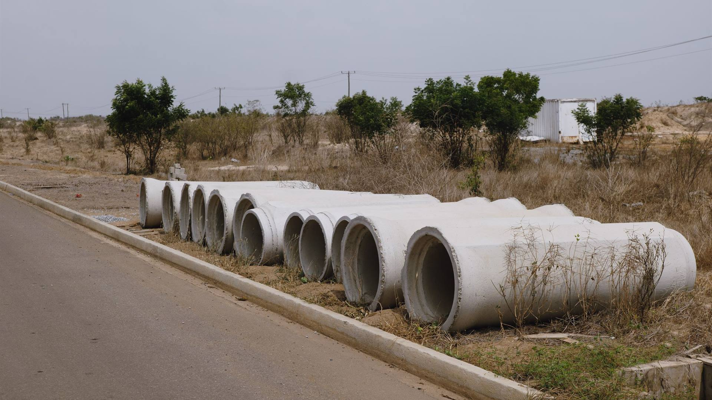

Markets We Serve
Municipal, commercial, residential, and roadway projects across Georgia and Tennessee.
WHO WE BUILD FOR
Different clients. One capable team.
Etowah Construction Group has completed municipal, commercial, residential, and roadway projects since launch. Whatever the market, the approach is the same: complete civil scope, careful execution, and critical connections done right.

MUNICIPAL
Water & wastewater infrastructure.
We build and rehabilitate pump stations and underground water and sewer systems for public agencies, including deep specialty excavation and utility tie-ins within public roadways.
- New pump station construction and rehabilitation
- Bypass pumping to keep systems operating
- 24-inch restrained-joint ductile iron

COMMERCIAL
Complete sitework for commercial development.
From clearing and grading through utilities, retaining walls, stormwater retention, curbing, and asphalt paving, we deliver the full civil scope for commercial sites.
- Full-site packages from clearing to paving
- Sewer, water, and storm utilities
- Underground stormwater retention

RESIDENTIAL
Site development for neighborhoods.
We prepare residential communities from raw land to finished streets: clearing, grading, water distribution, storm drainage, curb and gutter, and asphalt paving.
- Two-phase single-family neighborhood development
- Approximately 85,000 CY of mass dirt movement
- Water distribution and storm drainage

ROADWAY
Roadway infrastructure.
We complete asphalt paving and DOT-road work, along with curb and gutter and utility tie-ins within public roadways.
- 5.5 miles of asphalt across multiple DOT roads
- Curb and gutter
- Public-roadway utility tie-ins